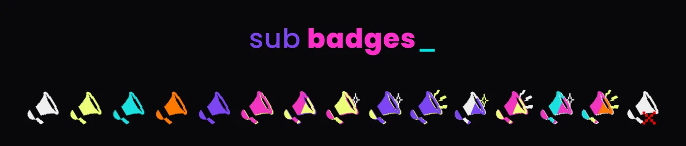
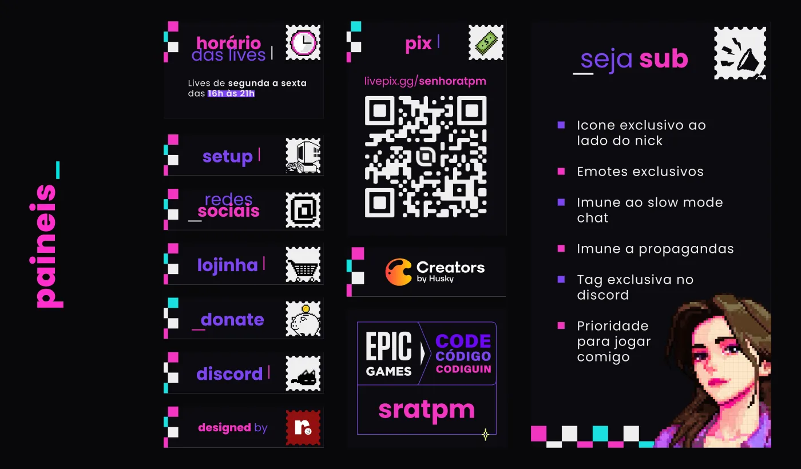
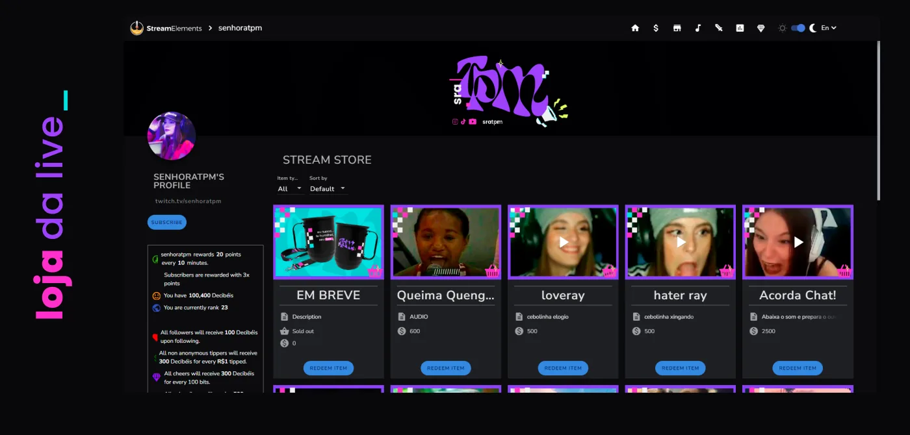
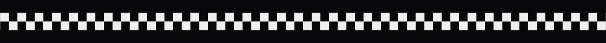
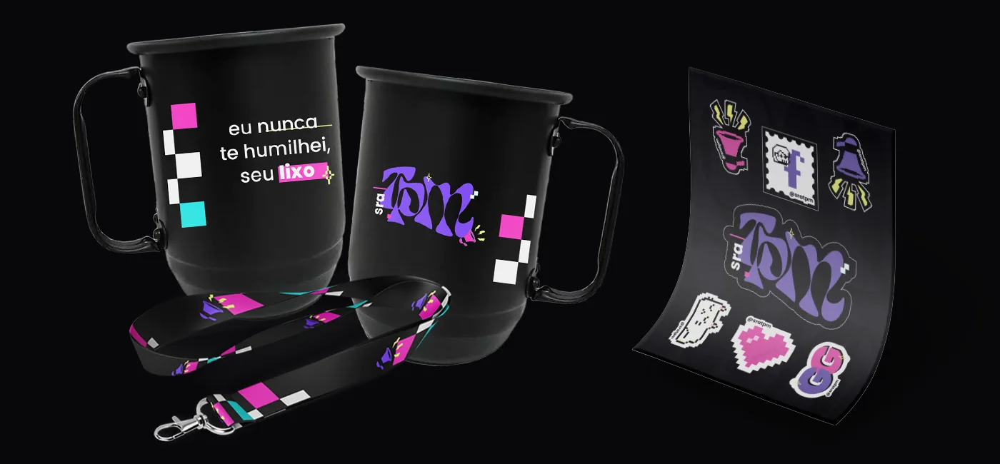
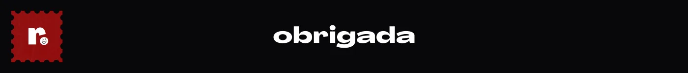

IDENTIDADE VISUAL · STREAMPACK
@sratpm.
Uma identidade inteira para a sratpm: o logo em blackletter, o xadrez em rosa e ciano criando um efeito de glitch e um gatinho em pixel art que atravessa as cenas. Tudo animado — início, pausa, offline e alertas — e levado para emotes, sub badges, painéis, a loja da live, a versão para TikTok e produtos físicos.
- CLIENTE
- sra tpm [streamer]
- ANO
- 2023
- ENTREGAS
- Logo · Cenas · Emotes · Badges · Alertas · Painéis · Loja
- FERRAMENTAS
- After Effects · Illustrator · Photoshop
- CRÉDITOS
- redlab studio






